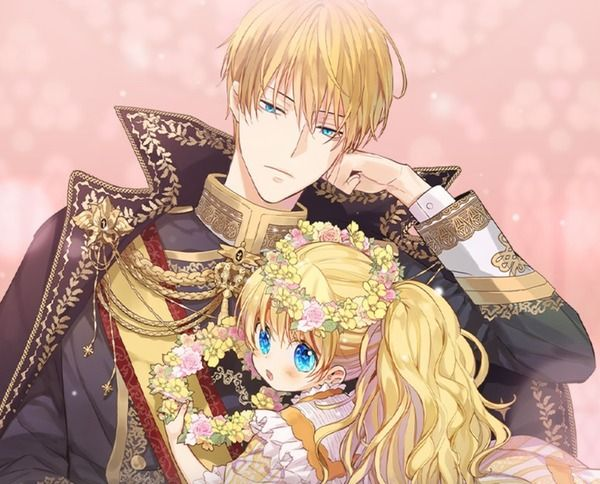

Who is Claude?
Emperor of the Empire of Obelia. He is a cold-blooded ruler known for instantly wiping out his enemies with his strong magic abilities and is merciless to his subjects. He is also the father of Princess Athanasia who is able to melt his cold heart.
The Emperor and his daughter
His Characteristics
- He hates sweets
- He has afternoon tea with Athy everyday
- He is cursed
Claude's Relationships
Because of his powers and cold nature, Claude is feared
by many. Those who are close to him are truly loyal while
his enemies plot against him to obtain the throne.
Click on the links below to learn more about them.